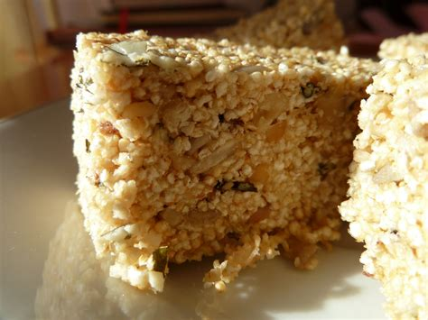

Baton z amarantusa
Zastąpi batonik musli. Jest pyszny, kaloryczny i odżywczy.

Składniki:
- 1 opakowanie poppingu z amarantusa (150g),
- 0,5 szklanki masła (ok. 125g, może być klarowne),
- 0,5 szkalni słodu lub miodu,
- 2-4 łyżki tahiny (można pominąć, jeśli nie mamy, albo dodać
roztarty, uprażony sezam),
- po 50g: pestek dyni, nasion słonecznika, orzechów włoskich,
- szczypta soli, imbiru, 2 łyżki soku z cytryny.
Przepis
- Rozpuść masło z miodem(nie gotuj).
- Dodaj szczyptę soli, imbiru.
- Nasiona, orzechy upraż lekko na patelni, mieszając drewnianą łyżką.
- Do rozpuszczonego masła dodaj popping, nasiona, orzechy, tahinę, sok z cytryny.
- Dokładnie wymieszaj i przełóż do foremki, wypłukanej zimną wodą. MOcno ubij drewnianą łyżką i
schowaj do lodówki na parę godzin.